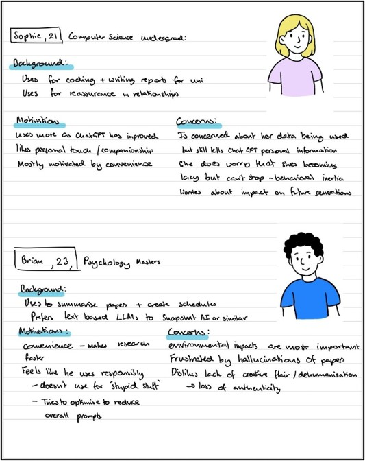
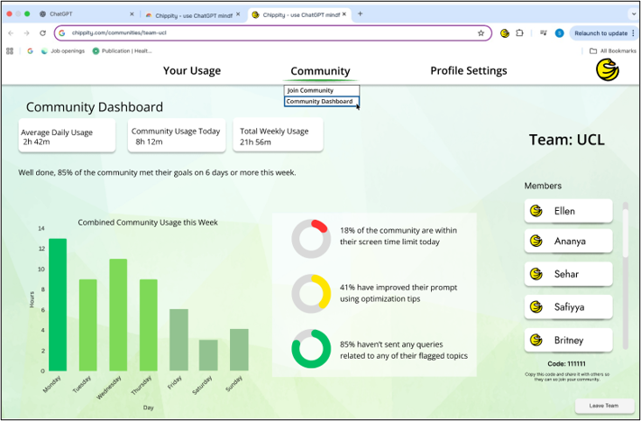

Overview
88% of UK undergraduates use LLMs regularly. The problem is not that they use them - it is that nothing in the interface asks them to think about what that use costs. Every prompt draws on energy-intensive data-centre infrastructure. Sustained reliance reorganises how students think, weakening the conditions for independent reasoning. Students are aware of both. They still don't change their behaviour.
Chippity addresses that gap. Rather than restricting use or lecturing students, it embeds lightweight reflective nudges and usage visualisation directly into ChatGPT, making cognitive and environmental consequences perceptible at the point of interaction, and letting students define their own goals for change.

The design process: from exploratory interviews through two rounds of prototyping and evaluation to a final hi-fi system.
Research
We conducted 15 semi-structured interviews with regular LLM users (ages 21-23, 14 primarily using ChatGPT), lasting 25-35 minutes each. Participants described their prompting routines, motivations, frustrations, and any awareness of cognitive or environmental consequences. All interviews were transcribed verbatim and analysed using reflexive thematic analysis - codes were clustered iteratively into themes through a series of affinity mapping sessions.

Affinity mapping - codes clustered and refined into four themes that directly shaped the design requirements.
Insights
Four themes emerged, all pointing to the same core problem: students know what they should do differently, but nothing in their environment creates a moment to act on it.
Convenience normalises reliance
LLMs are the most convenient tool available. That convenience becomes habit, sometimes unwanted. "The cost of convenience is the degradation of something else." (P4)
Concerns about cognitive agency
Students worry reliance erodes critical thinking and authorship. "I want to get back to the point where I don't need to use ChatGPT anymore." (P1)
Environmental impact is invisible
Most students had vague, second-hand awareness. Even sustainability-minded participants said the topic "goes over my head." It felt abstract and distant from daily choices.
Intention does not become action
Students recognise the problem but rarely change behaviour. "Why do I know what I should do but keep doing what I shouldn't?" (P4)
These themes produced five design requirements: bridge awareness and behaviour at the point of prompting; preserve autonomy; avoid discouraging legitimate use; make costs perceptible in context; and integrate into existing routines without friction.

Two personas synthesising distinct motivational profiles - one concerned primarily with cognitive overreliance, one with environmental impact. These anchored every subsequent design decision.
Ideation
We used Crazy 8s in a design workshop to generate solution directions quickly: wearables, screen pets, usage visualisations, goal-setting dashboards, and standalone reflective GPT interfaces all came up. Every concept was evaluated against one key criterion: does it require leaving ChatGPT?
Anything that did was discarded. The interviews had made clear that students adopted LLMs precisely because of low friction. An intervention that broke that flow would be ignored. A browser extension was the only option that kept reflection inside the interface students already use. The solution that emerged combined three mechanisms: self-defined usage goals, live tracking and visualisation, and in-context nudges delivered at the moment of prompting.
Low-fi Prototype
The prototype was hand-drawn then converted to a digital walkthrough for remote testing. It covered the full intended system: onboarding and profile selection, settings, 15 pop-up nudge variants in different screen positions, a personal statistics page, community creation and dashboard, and a companion mobile app with notification examples.

Lo-fi prototype screens: browser extension wireframes (top row) and companion mobile app in three states - sign-in, time limit reached, and approaching limit (bottom row).
Four design decisions were embedded at this stage, each grounded in the research:
Pre-set profiles
Students differed in what they wanted to address. Rather than asking everyone to configure from scratch, pre-set profiles (Eco Mode, Think Mode, Smart Balance, Custom) reduce onboarding friction while maintaining personal relevance.
User-defined goals
Participants consistently disliked being told what to do. Drawing on Self-Determination Theory, Chippity lets users set their own limits. When change feels self-endorsed rather than imposed, adherence is higher and dropout lower.
Reflective, non-prescriptive tone
Nudges invite consideration rather than enforce behaviour. Tone was treated as a first-order design decision - messages that felt moralising were discarded, messages that felt like a quiet reminder were kept.
Communities feature
Participants often compared their usage to peers. Knowing others were trying made individual effort feel worth it. The communities feature lets students observe collective progress without direct comparison.
First Evaluation
Remote think-aloud with 5 participants via Microsoft Teams. Each participant walked through the prototype and rated all 15 nudges on quality (1-5 scale), then placed the overall system on a helpful-to-intrusive scale with qualitative reasoning.

Key findings
High-fi Prototype
Evaluation feedback drove a systematic revision. Profile descriptions were expanded. A mascot was introduced to make the interaction feel personal. The nudge set was refined from 15 to 18, with wording adjusted based on rating data. All nudges were standardised to the bottom-right corner.

Set-up flow: Chrome Web Store listing, sign-up, profile selection, and detailed profile settings with advanced options.

A nudge appearing bottom-right while a student is mid-conversation on ChatGPT - positioned to be visible without interrupting the main task area.

The full system: personal usage and environmental impact stats, community creation and joining flow, community dashboard, and refined profile settings.

Community dashboard showing cohort usage, goal attainment rates, and prompt optimisation. Members see collective progress - motivating without ranking individuals.
Six examples from the final set of 18 nudges, covering eco-limits, screen time warnings, community comparisons, flagged topics, prompt limits, and focus tips:

Each nudge is phrased as an invitation, not an instruction. Tone and wording were directly informed by the rating data from evaluation 1.
The settings page was redesigned to include hover descriptions on every control, added in direct response to feedback that profile implications were unclear.

Hover description on the Personalised AI Recommendations toggle - one of several contextual explanations added after evaluation 1 flagged that settings lacked clarity.
Second Evaluation
A second round of in-person testing with 4 participants used task-based think-aloud rather than a slideshow walkthrough. Participants completed specific tasks through the prototype and flagged points of confusion in the user flow.
Changes implemented: font size increased on profile settings, information inconsistencies across screens corrected, buttons relinked to match intuitive navigation, scroll bar moved to the right side of the community members panel, and hover descriptions added to all settings.
Participants also suggested features outside the project timeline: an information page, daily or weekly goal achievements, and the ability to join multiple communities. These are noted as directions for future work.
Outcomes
Chippity demonstrates that reflective scaffolding can live inside existing tools without sacrificing the convenience that drives adoption. The community feature produced the strongest response across both evaluation rounds - knowing peers were trying made individual effort feel worthwhile.
The project contributes three things: a qualitative account of how cognitive offloading and environmental invisibility operate in everyday student LLM use; a working system that introduces a reflective layer without restricting access; and a set of design principles - preserve control, make consequences perceptible at the moment they are produced, and support self-regulation rather than enforcing compliance.
Limitations are real and worth naming. Single-session evaluations cannot replicate habitual use. Environmental feedback used estimates rather than real telemetry, since LLM providers do not expose per-query energy data. Mobile nudges were time-based rather than prompt-aligned due to OS restrictions. These constraints bound the claims the study can make and point clearly to the work that remains.